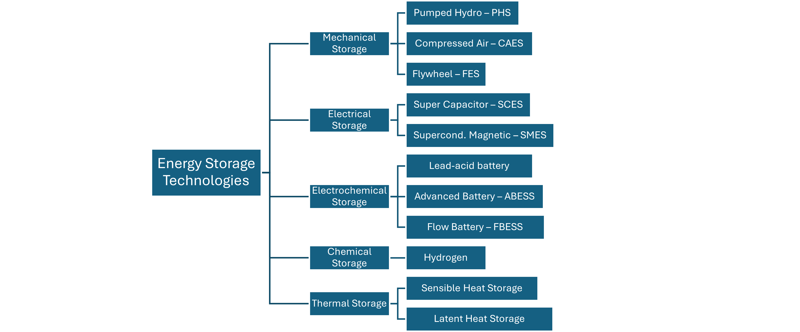
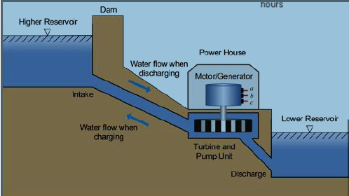
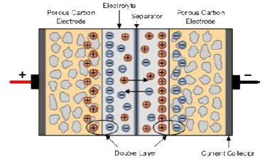
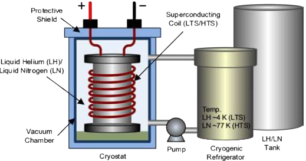
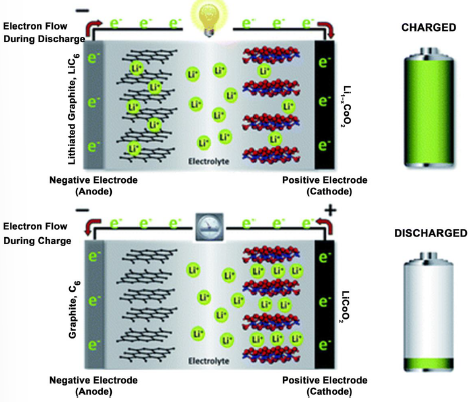
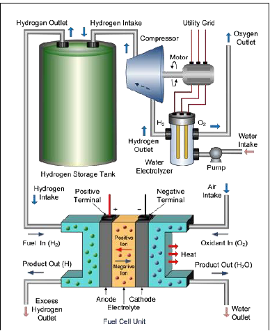

EE600 Week 5 Notes
1 Energy Storage Technologies
1.1 Curtailment: Managing Oversupply
- Managing Excess Generation in California.
- Reducing output from renewables undermines environmental goals
- Meanwhile, traditional power supply must remain online to meet morning ramps or to provide energy if the wind stops flowing or clouds cover solar panels.
- Technical and contractual barriers make it difficult to turn generators on & off like a light switch as utilities continuously balance Supply and Deman in Real-Time.
1.2 Managing Renewble Energy Over Supply
- CAISO Offers Energy Imbalance Market (EIM) to other utilities in the Western States.
- This real-time market increases flexibility by allowing access to Clean Energy from one area to be used in another.
- Oversupply is also helped by having different types of renewables located across a wide geographic are using Energy Storage to capture Excess energy + Adopting Time of Use Rate (TOU) to incentivize efficient consumption.
1.3 Time of Use (TOU) Rate
- The rate you pay for electricity varies depending on the Tim eof day you use it.
- On TOU plans you pay more for electricity during peak hours when electricity demand is higher, like in the evening when people return home from work.
- To balance for these higher electricity prices, you pay less for electricity druing off-peak hours such as late at night when people are sleeping and overall demand for electricity is lower.
- You can save money on your electiricy bills by adjusting your daily electricity consumption habits such as running your dish washer in the morning instead of right after dinner, or by charging your electric vehicle overnight.
- Under a TOU plan, Solar Power producers’ credit for excess solar electricity sent to the grid vary depending on the time of the day.
- Credit generated during off-peak hours will be worth less than a credit cents of the grid during peak hours.
- Many homeowners with TOU rates consider pairing their solar system with batteries.
- This allows you to store power during peak hours rather than paying for expensive electricity from the grid.
1.4 Energy Storage
- Energy Storage Move Energy Through Time
- Electricity can be stored directly in coils and capacitors.
- Indirect electrical storage requires electricity to be converted to some form of mechanical, chemical or kinetic energy prior to storage. It then is converted back to electricity at some point in time for use.
1.5 Benjamin Franklin’s Battery
- In 1749, Benjamin Franklin first used the term “battery” to describe a set of linked capacitors he used for his experiments with electricity.
- These capacitors were panels of glass coated with metal on each surface.
- These capacitors were charged with a static generator and discharged by touching metal to thier electrode.
- Linking them together in a “battery” gave a stronger discharge.
- Originally having the generic meaning of “a group of two or more similar objects functioning together”, as in an artillery battery, of Franklin’s capacitors.
- The term came to be used for voltaic piles and similar devices in which many electrochemical cells were connected together.
1.6 Classification of energy storage technologies based on the storage methodology

1.7 Mechanical Storage
1.7.1 Pumped Hydro Storage (PHS)

Notes: Open-loop systems use a free flowing source of water for either the upper or lower reservoir. For a closed-loop pumped storage hydropower, neither the upper reservoir nor the lower reservoir is located on a dammed stream.
1.7.1.1 Pumped Hydro Storage PHS
Potential Energy The potential theoretical energy in a volume of elevated water can be calculated as
\[ E = \rho V g H \] in KW
\[ E = {{\rho V g H} \over 3600} \] in kWh
Power from Falling Water
The power available from falling water can be expressed as:
\[ P = \rho gHW \eta \] in kW
H is the net head (m).
V the storage capacity (\(m^3\)).
g is the acceleration due to gravity (\(m/s^2\))
\(\rho\) is the density of the water (\(kg/m^3\))
E - energy (J)
Q = flow rate (\(m^3/s\))
Efficiency \(\eta\) = efficiency (generally in the range of 0,.75 to 0.95)
1.7.2 Large-Scale diabatic in-ground Compressed Air Energy Storage (CAES) System
[!(compressed_air_energy_storage_system.png)]
1.7.3 Modern Flywheel Energy Storage (FES)
\[ E_{FES} = {{1}\over2} J_{F} \omega_{mF}^2 \]
\(E_{FES}\) is the energy stored by the FES system (J), \(J_F\) is the moment of inertia (H) of the FES system (electrical machine inertia plus flywheel rotor inertia), \(\omega_{mF}\) is the flywheel rotor mechanical speed (rad/s).
FES systems can be classified into two types: - Conventional low speed FES units, which use steel as the flywheel material and rotates below 10,000 rpm - High-speed FES units, which use advanced high-strength composite materials for the flywheel, such as carbon-fiber, and rotates up to 100,000 rpm
1.7.3.1 Flywheels Turn Superconducting to Reinvigorate Grid Storage Potential
- The flywheel has fallen off may people’s radar since the industry’s leader, Beacon Power, filed for bankruptcy in 2011.
- The company was revived shortly after, and other competitors joined the market since.
- A flywheel battery stores electric energy by converting it into kinetic energy using a motor to spin a rotor. The motor also works as a generator; the kinetic energy can be converted back to electric energy when needed.
- Early flywheel batteries were bad at storing energy for long periods.
- Flywheels at the time were used more for short-term energy storage, providing five-to-ten-minute backup power in data centers.
1.7.3.2 Overcoming Shortcoming: Maky Flywheels Long-term Energy Storage Systems
- Improvement in material to enable high speed spins.
- New generation of motor-generator to reduce system energy losses.
- Reduce mechanical energy losses as waste heat by using passive magnetic bearing to holed the rotor in equilibrium without using external control that consumes additional energy.
- The use of the high-temperature superconductor (-196 C) as a bearing not only allows the bearing to lift a very heavy rotor (Revterra’s commercial-scale rotor will weigh seven tons) but it also cuts energy losses due to the bearing’s inherent ability to trap the magnetic field that holds the rotor in place.
1.8 Electrical Storage
1.8.1 Super Capacitor Energy Storage (SCES)

- Key difference of the super capacitor is its structure of liquid electrolyte and porous electrodes (activated carbon material), which creates an extremely high specific surface area (hundres of m2/g) compared to the conventional electrode structure.
- Very high capacitance per unit of volume, which can be from hundreds to thousands times larger than conventional electrolytic capacitors.
\[ C = \epsilon_0 \epsilon_r {{A}\over D} \]
A is the area of overlap of the two plates, D is the separation between the plates.
- \(\epsilon_0\) the absolute permittivity of dielectric constant of free space (vacuum, approximately 8.85exp-12 F/m),
- \(\epsilon_r\) the relative permittivity or dielectric constant of the medium between the two layers,
\[ E_{SCES} = {{1}\over 2} C_S V^2 \]
1.8.2 Superconducting Magnetic Energy Storage (SMES)

- Consists of the superconducting coil with its supporting structure and connection components, the cryogenic refrigerating system (cryostat, vacuum pumps, cryogenic refrigerator, tanks, etc.), the electronic power conditioning (conversion) system and the control system.
- Two main superconducting magnet topologies in a SMES system: solenoidal and toroidal.
1.9 Electrochemical Storage
1.9.1 Lithium-Ion Betteries

- The device charges when lithium ions move from a negative electrod to a positive electrode and discharges by the movement of ions in the reverse direction.
- Numerous difference chemistries make up the family of lithium-ion batteries, including but not limited to lithium iron-phosphate, lithium manganese-spinel, and nickel-manganese-cobalt.
- Lithium-ion batteries have a range of power-to-energy ratios depending on the chemistry and specific design of the battery system.
- Compared to other electrochemical energy sotrage technologies, lithium-ion batteries are energy and power dense.
- Due to their smaller size and low operating and maintenance needs, the obstacles to implementation are limited.
- Lithium-ion batteries are already commercially available for use in personal electronics and various other applications and are available for use on the electric grid.
1.9.1.1 Lithium-Ion Battery and Cobalt
- There is a trend to reduce or eliminate the amount of cobalt in cathodes for ethical and cost reasons.
- Most of the world’s cobalt is mined in the Congo which has been heavily criticized for its unethical and environmentally damging labor and mining practices.
- High cobalt batteries also have lower energy density which is not attractive to the EV sector.
- Shift in industry to NMC and NCA li-ion batteries with smaller proportions of cobalt, and lithium iron phosphate (LFP) cells which contain no cobalt.
- Although LFP cells have lower energy density, they have gained in popularity for use in vehicles and home storage because of their increased safety, and reliance on iron which is more abundant than cobalt.
1.9.1.2 Why Does Lithium-Ion Lead The Global Energy Storage Race?
- Currently, lithium-ion energy storage systems are maxing out at around four hours.
- It is expected to go out to six or maybe even eight hours, but the technology does suffer from diminishing returns and less favorable economics at longer durations.
- Lithium-ion energy storage systesm are well suited to help with second-to-second system balancing, renewables ramping and providing peak power services
- Manufacturing at scale has quickly reduced cost and increased the energy density of Li-ion batteries, making long-lasting portable electronic device and EVs possible.
- Expect half the passenger cars sold globally in 2032 to be electric.
1.9.1.3 Improvements in Li-ion Technologies
- Research into Li-ion batteries is focused on improving energy density, size, and safety while reducing cost.
- In 2020, Tesla discussed several aspects of improvement including the introduction of silicon to batteries as part of their strategy.
- Solid-state batteries replace the liquid electrolyte with a solid material.
- This could increase energy density and durability while removing the most flammable element of Li-ion batteries, making them ideal for high-risk applications like pacemakers.
- However, solid-state Li-ion batteries are currently much more expensive than traditional liquid-electrolyte batteries.
1.9.1.4 New Batteries: Beyond Li-Ion
- Alternative storage methods for low-cost, long duration storage are coming.
- These include non-battery storage and novel battery chemistries.
- While lithium may be the best battery chemistry for transportation and mobile applications, these new batteries are especially useful for stationary applications like grid scale energy storage.
- Flow batteries are a type of long-duration battery technology that work by flowing an electrolyte through a series of plates.
- The fluid volume dictates the energy, and the electrode plates dictate the power.
- There are a variety of flow battery startups at various stages of commercialization.
- Notable chemistries are vanadium redox, iron flow, and zinc-based.
- The difficulty with many of these systems is the movement of reactive liquids or liquid/solid slurries which challenge the pumps, valves, and seals needed to move these reactants.
- Compared with lithium-ion batteries flow chemistries also have lower round-trip efficiencies.
- These new battery technologies have yet to overcome their design challenges and demonstrate commercial viability.
- For them to be successful in stationary energy storage, they must first demonstrate that lower USD/kWh installed costs are possible.
1.9.1.5 Electric Vehicles and Li-ion
- It is unlikely that EVs will move away from Li-ion battery technology in the foreseeable future.
- The energy density of Li-Ion batteries align well with mileage needs and notable advancements, like solid electrolyte designs and the adoption of new anode chemistries, are coming to production.
- Expect EV adoption to increase as costs continue to fall and vehicle range is extended.
1.10 Chemical Storage
1.10.1 Hydrogen Energy Storage System with Fuel Cell Technology and Electrolyzer

- Fuel cells work like batteries, but they do not run down or need recharging.
- They produce electricity and heat as long as fuel is supplied.
- A fuel cell consists of an anode and a cathode sandwiched around an electrolyte.
- In a hydrogen fuel cell, a catalyst at the anode separates hydrogen molecules into protons and electrons, which take different paths to the cathode.
- The electrons go through an external circuit, creating a flow of electricity.
- The protons migrate through the electrolyte to the cathode, where they unite with oxygen and the electrons to produce water and heat.
1.10.1.1 Coating Offshore Wind and Green Hydrogen Production
- Green hydrogen produced offshore, in which electrolyzers are powered by offshore wind.
- Falling costs of offshore wind and electrolyzers would improve the economics of such projects.